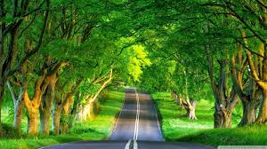

NATURE ARTICLES
DESCRIPTION:
I like to collect descriptions other people have of life. I keep them on a big spreadsheet that I’m constantly updating. I read a lot and I pay attention to how my fellow authors get their ideas across, how they create pictures of scenery from their words. I’m in awe of people like Peter Matthiessen with his nature descriptions and Margaret Meade with her emotion-invoking portraits of people.
Matthiessen, who I think is the quintessential writer on our environs Margaret Meade–to her, people don’t exist outside of their habitat. I agree Barry Lopez–a beautiful nature writer many more I don’t remember, just copied their words down, in awe over their ability to draw me into their worlds
I like to collect descriptions other people have of life. I keep them on a big spreadsheet that I’m constantly updating. I read a lot and I pay attention to how my fellow authors get their ideas across, how they create pictures of scenery from their words. I’m in awe of people like Peter Matthiessen with his nature descriptions and Margaret Meade with her emotion-invoking portraits of people.
Matthiessen, who I think is the quintessential writer on our environs Margaret Meade–to her, people don’t exist outside of their habitat. I agree Barry Lopez–a beautiful nature writer many more I don’t remember, just copied their words down, in awe over their ability to draw me into their worlds
I like to collect descriptions other people have of life. I keep them on a big spreadsheet that I’m constantly updating. I read a lot and I pay attention to how my fellow authors get their ideas across, how they create pictures of scenery from their words. I’m in awe of people like Peter Matthiessen with his nature descriptions and Margaret Meade with her emotion-invoking portraits of people.
Matthiessen, who I think is the quintessential writer on our environs Margaret Meade–to her, people don’t exist outside of their habitat. I agree Barry Lopez–a beautiful nature writer many more I don’t remember, just copied their words down, in awe over their ability to draw me into their worlds
I like to collect descriptions other people have of life. I keep them on a big spreadsheet that I’m constantly updating. I read a lot and I pay attention to how my fellow authors get their ideas across, how they create pictures of scenery from their words. I’m in awe of people like Peter Matthiessen with his nature descriptions and Margaret Meade with her emotion-invoking portraits of people.

POSTED BY:DIVYA
DATE:12-11-2016

POSTED BY:ANU
DATE:16-11-2016

POSTED BY:NAINIKA
DATE:21-11-2016